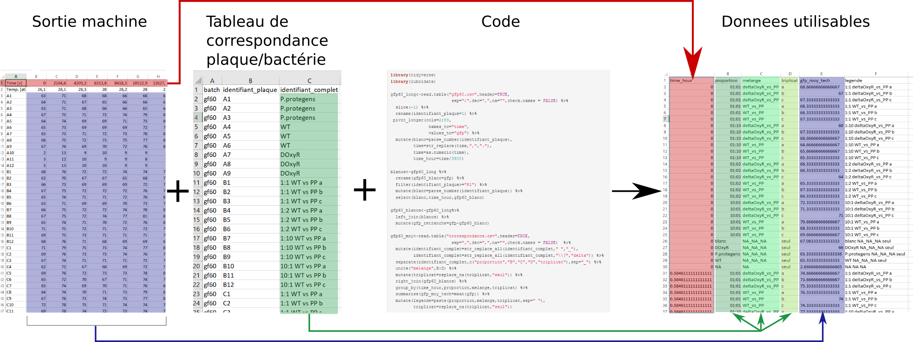

2 Exemples de réalisations
2.1 Productions de rapports de synthèse
- Format html ou pdf

2.2 Explorations des données brutes
- Comptage d’individus
- Visualisation de facteurs croisés (concentrations de métaux, dose d’engrais, compartiment (racines et feuilles), inoculation en mycorhizes)

- Relations par paires de variables
2.3 Préparation des données
- Restructuration (une colonne = une variable; une ligne = une observation) d’un tableau sorti d’une machine + fusion de tableaux + création des colonnes d’identifiants individus + retranchement des blancs + moyennes des triplicats

2.4 Graphiques et tableaux de synthèse
- Ratios entre variables
- Moyennes et écart-types


- Tableaux de contingence
2.5 Statistiques
- Régressions linéaires
- Tableau d’anova
2.6 Applications shiny
- Application d’autoévaluation à ma formation par les participant-e-s (la capture d’écran ne rend pas justice à la qualité du rendu de l’application…)